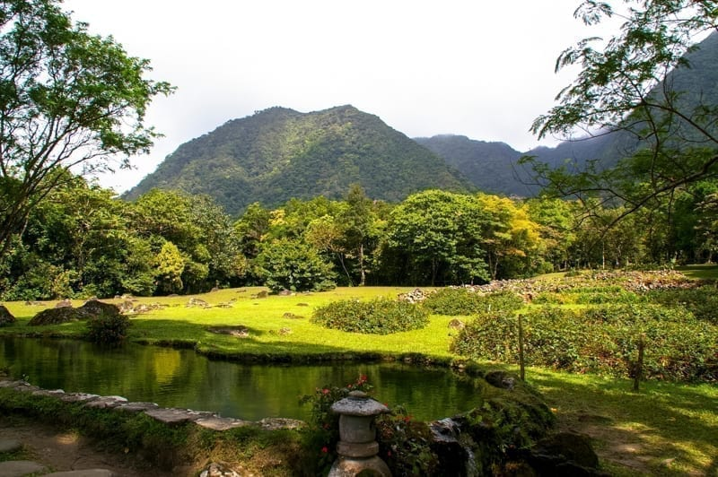

Rodeado de montañas, El Valle de Antón es famoso por su clima fresco, mercados artesanales y actividades de ecoturismo. Es un lugar ideal para los amantes de la naturaleza y la tranquilidad.
Ubicación:
El Valle de Antón es un pueblo ubicado en el área nororiental del corregimiento del mismo nombre, en la provincia de Coclé,Panamá.
Atracciones Principales:
- Mercado Municipal Artesanal
- Zoológico El Níspero
- Sendero de La India Dormida
- Parque Nacional Gaital
Accesibilidad:
Se puede tomar la Carretera Interamericana y salir en Las Uvas. La carretera tiene varias curvas, por lo que se recomienda conducir con cuidado y despacio.
Actividades Adicionales:
Caminar hasta la cascada Chorro El Macho para observar el Chorro Macho desde las alturas en una aventura de tirolesas. Incluso explorar el Sendero de los Quetzales que es uno de los senderos más conocidos en el Valle, con un recorrido extenso de casi 5 km. libre y excursiones guiadas por la naturaleza.